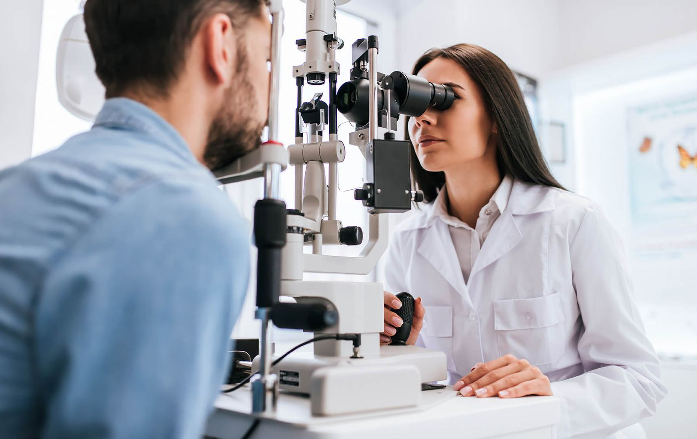
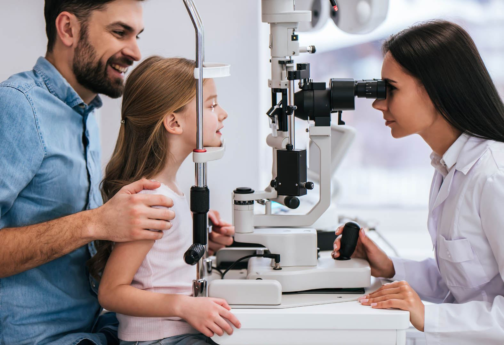

Synsundersøkelse
En synsundersøkelse hos oss tar rundt en halvtime, og handler om mer enn styrke. Vi ser etter tegn på øyesykdom, måler hvordan øynene samarbeider – og forklarer hva tallene betyr.

Hva vi undersøker
Du får beskjed underveis i undersøkelsen om vi ser noe som bør følges opp. Er det nødvendig, henviser vi videre til øyelege.
- Synsskarphet – hvor skarpt du ser på nært og langt.
- Brytningsfeil – nærsynthet, langsynthet og skjeve hornhinner.
- Øyetrykk og øyehelse – tegn på grå stær, glaukom og andre tilstander.
- Samarbeid mellom øynene – viktig for hodepine og slitne øyne.
Fire steg, én time
Du trenger ikke forberede noe, men ta gjerne med brillene du bruker i dag.
- Samtale først
Vi spør om hvordan du bruker synet, om du er sliten i øynene, og om det er noe som har endret seg.
- Målinger
Synsskarphet, brytning og øyehelse. Maskinene er raske, men vi tar oss tid til å kontrollere.
- Prøveglass
Du ser gjennom prøveglass og sammenligner – før og etter. Det er her styrken blir riktig.
- Gjennomgang
Du får resultatet skriftlig, og vi blir enige om hva som er neste steg.

Når øynene svir eller renner
Tørre øyne gir ubehag som oppleves forskjellig fra person til person. Fremmedlegemefølelse, svie eller tåreflod kan indikere tørre øyne – og det er noe vi kan utrede.
Vi ser på tårefilm og øyelokk, og anbefaler tiltak som passer: dråper, varmekompression eller vaner du kan endre. Er det behov for mer behandling, henviser vi videre.
Klart for en grundig synsundersøkelse?
Ring oss på 61 22 61 50, eller send en forespørsel med tidspunktet som passer deg. Vi svarer så fort vi kan.